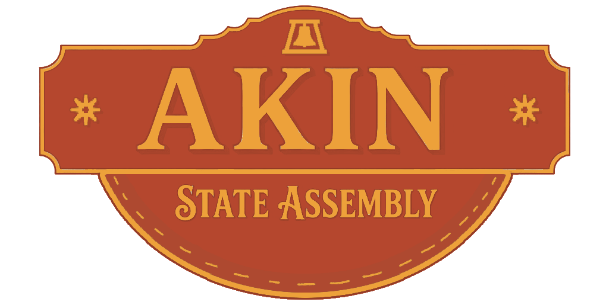
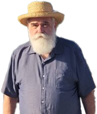
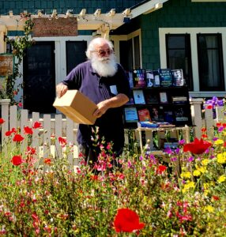
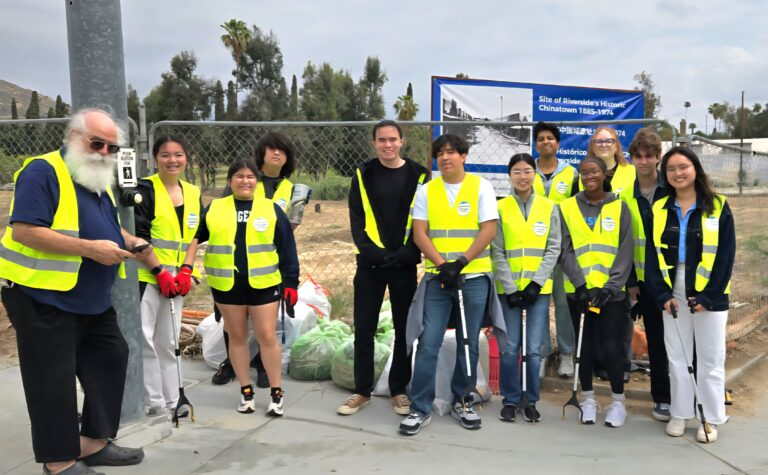

“The very wealthy already have plenty of representation in Sacramento and Washington. The working majority in this district deserves a representative in the legislature who puts their needs first.
”

Kevin Akin is a lifelong Riverside resident running for State Assembly to fight for the Inland Empire community his family has called home for nearly 90 years. Raised in a large, working-class family, Akin understands the financial strains facing local households. Before running for office, he spent decades in the local workforce—serving five years as a carpenter, 10 years as a steelworker, and over 20 years as a hospital steam engineer until his retirement. Alongside his wife, Dr. Margie Akin, a UCR-educated anthropologist, Kevin has deeply rooted his life in the University City neighborhood, raising four children and five grandchildren while remaining heavily involved in local community service.
Akin's candidacy is built on a foundation of deep civic engagement and a lifetime of public advocacy. An avid local historian, community volunteer, and dedicated environmental advocate, he has spent his life working to better the region—from leading local street cleanups to volunteering hundreds of hours documenting local history and preserving access to books. His lived experiences fuel a platform focused on practical, working-class solutions: lowering the cost of living for families, protecting the region's agricultural heritage by fighting destructive pests, and fostering the kind of tolerance and mutual support that keeps communities whole.
Kevin Akin doesn't accept corporate, LLC, or PAC money — this campaign runs on small donations from people across the Inland Empire.

The Platform
Special interests and corporate PACs spend millions to buy influence in the state legislature, resulting in laws that benefit billionaire corporations instead of working families.
Kevin Akin does not and will not accept a single dime of corporate PAC money. He will push to sharply limit the power of independent expenditure committees and ensure Sacramento answerable to the people, not wealthy donors.
From sales and property taxes to income taxes, the current tax system falls far too heavily on working people and the poor while billionaires get a free pass.
Kevin Akin will fight to restructure state and local tax laws to shift the burden away from the working class and onto the very wealthy. He believes those who benefit the most from our economy should pay their fair share to fund essential public services.
Sacramento needs leaders who have the backbone to call out political corruption and authoritarian threats to our country, rather than falling in line behind a would-be dictator in Washington.
As a lifelong historian, Kevin Akin knows that holding power accountable is vital to a healthy society. He will be an uncompromising voice for democratic values, transparency, and a government that serves everyday citizens rather than corrupt political elites.
* indicates required